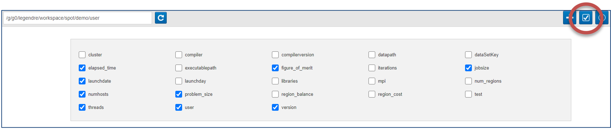
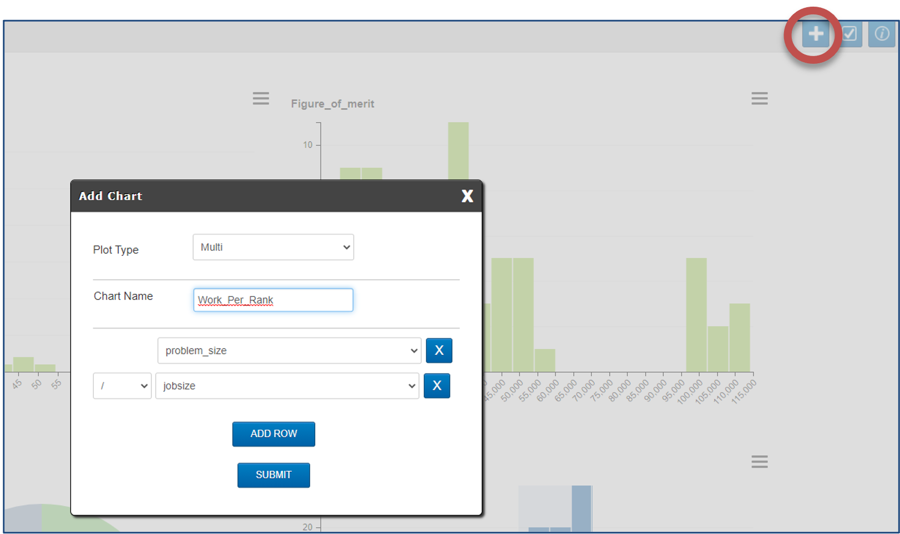
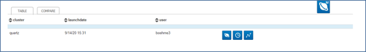
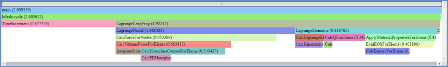

Getting Started¶
SPOT’s Workflow¶
First, point the SPOT webpage at a directory containing *.cali files.
Second, select “interesting” sets of runs to analyze, that is slice and dice the data to make interesting comparisons. Third, run common analyses with SPOT, such as graphing a history of performance changes or viewing performance context trees. Fourth, run more advanced, deep-dive analysis with Hatchet.
Data Collected¶
Each application run has two types of data:
Metadata¶
Name/value data about job, such as user, host, FOM, input parameters, etc
Displayed as histograms
Metadata can be filtered by selecting regions of the histograms. Filtering in
one histogram updates the range of all other histograms. As an example,
filtering Launchdate to Feb 19-Feb 26 will update the Users
histogram to only show users who ran between those dates. While filtered,
comparisons and Jupyter notebooks will operate on the filtered data.
Metadata is also configurable by either showing/hiding metadata or creating composite metadata.
 Performance Data¶
Can be different metrics, including Avg Time/Rank, Max Time/Rank, bandwidth, etc
Displayed as a flame graph or timeseries
Performance data can be visualized per-run or compared across runs. A single run is contained in each row of the Table View:
By clicking the clock icon on the right, a flame graph is generated showing performance against code:
And by clicking the graph icon on the right, a timeseries is generated showing performance against time:
When visualizing performance data across runs, the display is as follows:
Metadata value on x-axis
Aggregation (min/max/avg…) if multiple runs at same point.
Metric to graph on y-axis.
Grouping metadata. Each unique value is a graph.
Stacked performance graph. Click to drill-down.
Flame graph for runs currently under cursor.
Metadata for runs currently under cursor.